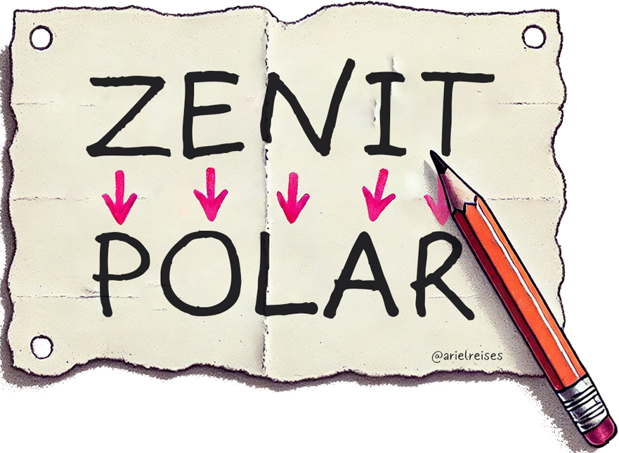

Zenit Polar é uma sistema simples de criptografia, que consiste na substituição das letras de uma palavra pela sua correspondente no nome ZENIT POLAR:

Z substitui o P e vice e versa
E substitui o O e vice e versa
N substitui o L e vice e versa
I substitui o A e vice e versa
T substitui o R e vice e versa
As demais letras, que não compõem tais palavras, permanecem inalteradas, e ignoram-se os acentos. De tão simples, era usado nas escolas pelos alunos para passarem bilhetes ou escreverem em código, sem que os adultos descobrissem.
Quer aprender mais sobre criptografia?